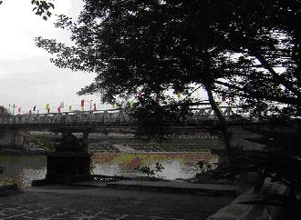

- 10 -

guyễn Học trao đổi với người phụ trách trạm kiểm soát, họ đồng ý cho chúng tôi vào tham quan, chụp ảnh cột mốc và trạm kiểm soát cửa khẩu hai bên.

Trung tâm Thương mại Trung Quốc
Đến biên giới, so sánh giữa hai nước, tôi mới thấy, khu vực thuộc Việt Nam quản lý thì nhà cửa, trung tâm thương mại, trạm xuất nhập cảnh rất tạm bợ, nhỏ bé, xấu xí…, một cái gì đó chưa ổn định, nếu không muốn nói là… lép vế! Trong khi đó Trung Quốc xây dựng kiên cố, hoành tráng, to đẹp. Tại sao vậy?

Hải quan Trung Quốc tại cửa khẩu Hữu Nghị

Phần rải đá trắng là của Trung Quốc
Cửa khẩu Hữu Nghị ngoài cột cây số 0, còn có 2 cột mốc biên giới, 1116 và 1117, cách nhau khoảng 100 mét. Ngay hai cột mốc này, phần thuộc Trung Quốc hoành tráng và đẹp hơn của Việt Nam rất nhiều.

Cột cây số 0, Hữu Nghị Quan

Cột mốc 1117, cửa khẩu Hữu Nghị
Đứng dưới cột mốc 1117, tôi hỏi Học:
-Có phải Trung Quốc đã lấn chiếm một số đất vùng biên Lạng Sơn phải không?
-Phải, phía ga Đồng Đăng, khoảng 400 mét.
Nguyễn Học giải thích cho tôi hiểu:
-Thời chiến tranh chống Mỹ, hàng viện trợ của phe XHCN khối Đông Âu và tên lửa Liên Xô đưa sang Việt Nam, qua Trung Quốc bằng tầu hỏa. Đường sắt Trung Quốc rộng 1,432 mét, đường sắt Việt Nam có 98 cm, Trung Quốc lắp thêm đường ray (thành 3 đường) cho rộng đủ 1,432 mét để tầu chở vũ khí chạy thẳng sang Việt Nam. Đường sắt 3 ray Kép - Yên Lập - Cái Lân, ngoài mục đích chuyển hàng vào kho còn đề phòng Thủy quân Lục chiến Mỹ đổ bộ vào miền Bắc, Trung Quốc sẽ dùng con đường này đưa quân sang trấn giữ bảo vệ khu Hạ Long. Con đường huyết mạch vận chuyển hàng viện trợ của phe XHCN chính là đường sắt 3 ray từ ga Đồng Đăng xuống Thái Nguyên – Yên Viên. Phi công Mỹ gọi là Tam Giác Sắt, cần phải triệt phá. Nơi đây cũng chính là túi hứng bom Mỹ. Chiến tranh biên giới (17-2-1979) kết thúc, quân Trung Quốc chiếm gần 1000 mét khu Đồng Đăng. Lý do Trung Quốc đưa ra là đường tầu Trung Quốc rộng 1,432 đến đâu, đất Trung Quốc đến đó. Sau bao nhiêu cuộc thương lượng về biên giới, đòi mãi, Trung Quốc trả lại 600 mét cho Việt Nam, biên giới Trung Quốc kéo thêm 400 mét vào lãnh thổ Việt Nam. Ngày nay, hai nước đã đóng cột mốc, công nhận phần đất ấy thuộc Trung Quốc.

Đường biên giới Việt - Trung bị Trung Quốc lấn chiếm sau ngày 17-2-1979 (Bản vẽ minh họa của Nguyễn Học)
Lạng Sơn, cửa ngõ của biên giới, nơi đây đã chứng kiến biết bao lần cuộc chiến tranh tàn khốc giữa Việt Nam và Trung Quốc, cũng chính nơi đây là cửa ngõ thương mại của hai quốc gia có từ hàng ngàn năm trong cuộc dựng nước và giữ nước của hai dân tộc Việt-Hán.
Nói như nhà văn Phù Thăng, “chiến tranh là chiến tranh, không phải do tôi và do anh gây ra”, có nghĩa trách nhiệm không thuộc người lính và người dân của hai chiến tuyến. Trách nhiệm thuộc về kẻ lãnh đạo quốc gia đã tham gia chiến tranh, còn người dân của hai nước vùng biên chỉ là nạn nhân của những cuộc xâm lược giành bá quyền, thôn tính lẫn nhau. Mai đây, một vài thập niên, thậm chí vài thập kỷ nữa, các sử gia Trung Hoa có thể sẽ ghi: “Ông cha ta mở mang bờ cõi xuống phương Nam”, như tất cả sử gia các quốc gia khác, mỗi khi cuộc chiến tranh xâm lược, chiếm lĩnh lãnh thổ của nước láng giềng thành công.
Một người bạn ở Pháp gửi cho tôi những tấm hình thu nhặt được trên mạng, anh bảo:
-Viết về cửa khẩu Lạng Sơn mà không có những bức ảnh tư liệu, làm sao bạn đọc hiểu biên giới Việt-Trung xưa và nay.
Mail của anh viết:
-Đây là postcard (bưu ảnh) do người Pháp chụp, vào khoảng 1895 gì đó.


Một buổi đi tập Thái Cực Quyền, tôi hỏi một ông người Lạng Sơn, cỡ tuổi tôi, về Hữu Nghị Quan, ông kể:
-Năm 1956, ông Hồ và Mao đổi tên Mục Nam Quan (Phương Nam hoà hảo) thành “Hữu Nghị Quan” và hai ông trồng cây đa “hữu nghị” ở đó, thế mà bây giờ cây đa đó cách chỗ cột cây số 0, cửa Hữu Nghị tới… 500 mét về đất Trung Quốc.”
Ông kể tiếp về diễn biến cuộc chiến Trung-Việt 17-2-1979, vùng biên giới Lạng Sơn và lý do vì sao cầu Kỳ Cùng bị sập.
-Sáng sớm 17-2-1979, Trung Quốc đưa quân tràn sang 6 tỉnh biên giới. Riêng Lạng Sơn, vì lực lượng ta mạnh, nó chỉ bắn pháo sang, gây đổ nhà cửa. Báo Nhân dân đăng tin (khá hài hước), “Đánh nhau to trên cửa Hữu Nghị.
-Hai bên giao chiến được gần một tuần, Việt Nam yếu hơn, lùi về đến gần ải Chi Lăng (cách Lạng Sơn chừng 40 km). Ở sông Cầu gần Bắc Ninh, mọi người phải đi đắp chiến lũy, gọi là “phòng tuyến sông Cầu”. Hà Nội nhốn nháo, hoảng loạn, tưởng phen nảy quân Trung Quốc sẽ “giải phóng Hà Nội” như quân Bắc Việt giải phóng “Sài gòn ngày 30-4-1975”.
Cầu Kỳ Cùng được lệnh phá, vào ngày 23 hoặc 24-2-1979, không thể chậm hơn. Thế rồi sau gần 10 ngày, Trung Quốc tuyên bố rút quân. Khoảnh đất Việt Nam từ cột cây số 0 vào sâu đất Việt Nam vài trăm mét, mãi đến năm 1992 mới gỡ được hết mìn, trước đó Trung Quốc coi đó là “vùng đệm”. Quân đội Việt Nam không dám vào. Vào là bị Trung Quốc nổ súng, chết liền.



Cầu Kỳ Cùng hiện nay
Ảnh tư liệu về cuộc chiến Trung-Việt 17-2-1979

Giao chiến ở cửa khẩu Hữu Nghị Quan

Tù binh Trung Quốc bị bắt trong cuộc chiến 2-1979

Tù binh Trung Quốc trong nhà giam

Tù binh Việt Nam bị Trung Quốc bắt
Hoàng hôn bắt đầu buông xuống, từng dải nắng như dát vàng trải dài trên sườn núi cũng là lúc chúng tôi từ giã Lạng Sơn. Đường quốc lộ 1A bắt đầu đông, các xe tải chở hàng, các xe máy của cửu vạn cũng lao nhanh hướng về Hà Nội và các tỉnh thuộc đồng bằng Sông Hồng. Vừa qua thành phố Lạng Sơn không xa, một chiếc xe máy, hàng chất cao ngất ngưởng, vọt qua đầu xe chúng tôi, lao nhanh qua khúc cua. Thấy tôi lắc đầu, ngán ngẩm, Nguyễn Học nói:
-Thế này ăn thua gì, muộn chút nữa, anh sẽ gặp vài chục xe như thế kia nối đuôi nhau phóng bạt mạng, đánh võng, lạng lách. Gặp các bố này sợ lắm.
-Họ không sợ bị tai nạn?
-Anh ơi! Việt Nam anh hùng, biết chết là gì đâu!
Nguyễn Học tiếp:
-Anh biết không, luật bất thành văn, xe lớn đè xe bé là phải đền, chẳng cần biết ai sai ai đúng.
-Thế là thế nào?
-Thế này, ô tô và xe máy quệt nhau, xe ô tô đền. Xe máy và xe đạp đâm nhau, xe máy đền. Chẳng cần biết vì sao tai nạn, ai đúng ai sai.
-Luật rừng à?
-Chính xác!

Cửu vạn trên đường cua tử thần
Giao thông ở Việt Nam ngoài chuyện tắc đường kinh niên, vô phương cứu chữa, còn có chuyện tai nạn xảy ra như cơm bữa. Theo thống kê (chưa đầy đủ), hàng ngày người Việt Nam ra khỏi nhà, có trên 40 người đi thẳng vào nghĩa địa và hàng trăm người vào bệnh viện, trong đó số người trở thành tàn phế hơn 50%. Có nghĩa, mỗi năm Việt Nam có hơn 1 sư đoàn (dân) “bị” hy sinh trong hòa bình, vài sư đoàn thương phế nhân do tai nạn giao thông gây ra. Tại sao vậy?
Câu hỏi này được các báo chí, các nhà lãnh đạo có trách nhiệm ở Việt Nam đưa ra thảo luận bao nhiêu năm, tốn biết bao giấy mực với nhiều giải pháp “sáng nắng chiều mưa, trưa mai lại nắng”! Các ngã tư, vòng xoay (round about) hết mở lại đóng, đường hai chiều bịt thành một chiều, số xe lẻ vào thành phố ngày lẻ, số chẵn vào ngày chẵn… nhưng cuối cùng nạn kẹt xe, tắc đường, tai nạn giao thông năm sau vẫn tăng hơn năm trước một cách đều đều.
Hãy cứ về nông thôn, nếu không nói ngoa, trên 50% người điều khiển xe máy không có bằng hoặc bằng rởm, mấy ai đến trường học lái và thi lấy bằng một cách nghiêm túc. Còn bằng lái xe, cũng không ít người nộp tiền cho cò, sẽ có bằng lái xe các loại theo yêu cầu. Ngay ở Anh, người Việt cũng có người dùng bằng thật, người giả.
Tôi là một trong số người Việt tỵ nạn có bằng lái xe khá sớm ở Scotland (1983), vì vợ tôi đi làm gần trường Stevenson College, nơi tôi theo học. Chúng tôi mua một chiếc xe Ford second hand, để đỡ mất thời gian và mùa đông tránh được cái rét thê thảm chờ xe bus.
Khi còn ở Việt Nam, thường xuyên đi xuống huyện cấp cứu, tôi được cậu lái xe bệnh viện dạy sơ qua, chính vì biết chút đỉnh đã làm tôi phải thi đến 3 lần mới đỗ. Tuy thế chưa đến nỗi tệ, anh chàng người Hong Kong, gần nhà, thi 15 lần vẫn phải đeo “L” (Learner- Người tập lái). Nguyên nhân, anh ta “cựu taxi” ở Hong Kong, thói quen lái nhanh vượt ẩu đã thấm vào máu, vào từng đường gân thớ thịt không thể sửa được. Thấy tôi thi đậu, anh có ý thuê tôi thi hộ với giá 200 bảng nếu đỗ. Món tiền này lớn, hồi ấy vợ tôi đi làm xưởng bánh kẹo, trừ thuế còn 72 bảng/tuần. Thời bấy giờ, người đi thi lái xe chỉ cần cầm giấy báo thi và bằng lái xe tạm thời không dán ảnh. Giám thị chỉ kiểm tra chữ ký giữa bằng lái và bản dự thi. Khe hở này mãi đến 1995 (?) mới chấm dứt khi giấy báo thi có ảnh. Tôi từ chối, không muốn vi phạm pháp luật. Người quen ai cũng chê, thậm chí có người bảo ngu, “gần bằng tháng lương, vợ con đỡ khốn khổ, ai biết đấy vào đâu”. Ít lâu sau, cậu Hùng ở Dean làm dịch vụ này, nghe đâu sau hơn một năm bị phát hiện, đi tù.
Theo ý kiến cá nhân, Nguyễn Học lý giải:
-Lái xe là một kỹ năng, kém hay giỏi chỉ vài tuần là xong. Nhưng ý thức chấp hành lại là chuyện đáng nói ở Việt Nam. Cứ tai nạn là công an giao thông được xơi cả hai bên, càng nhiều càng tốt.
-Bảo hiểm ở Việt Nam có cái lạ: chỉ đền cho những chủ xe… bị trái.
Thí dụ: hai xe va nhau: Theo biên bản, nếu xe mình đi sai, bảo hiểm đền tiền sửa xe (thí dụ 30 triệu chẳng hạn). Nếu mình đúng, thì không được bảo hiểm, mà phía sai phải đền cho mình, thoả thuận trả cho mình một số tiền mặt (cash) là X (thí dụ 30 triệu). Sau khi hai bên đã xong, chia tay nhau, nghiễm nhiên mình tự phải mang xe đi sửa, không được nhận bảo hiểm nữa.
Bây giờ mới đến màn 2: Đề nghị công an làm một biên bản ‘mới’ ghi lỗi do mình sai, nhờ đó được nhận bảo hiểm. Giá bao nhiêu thì tùy: thí dụ đã nhận tiền mặt 30 triệu, rồi thì cưa đôi, cưa ba hoặc thỏa thuận đưa vài triệu là có biên bản mình ‘sai’. Vì thế mới có cảnh lái xe cả hai bên va chạm đều năn nỉ xin biên bản ‘xác nhận phía mình… sai.
Gần đây ở Việt Nam rộ lên chuyện lái xe container lỡ đụng phải người đi đường, thấy nạn nhân chưa chết, y lùi xe vài lần cho nạn chết hẳn. Tại sao vậy? Hãy nghe Nguyễn Học giải thích những bất cập của cái xã hội Việt Nam đưa đến hành động dã man, vô nhân đạo ấy.
Nguyễn Học giải thích:
-Một lý do nữa là thuốc chữa bệnh và chi phí cho người bị thương quá cao, một vụ bị thương đền tới gần trăm triệu cho phí thuốc men, thời gian kéo dài, trong khi:
1-Phanh gấp để tránh, trong trường hợp may mắn gẫy cardan, hoặc hỏng xe, chữa hàng chục triệu (ít nhất là 10 triệu), chưa kể xe văng ra, gây tai nạn cho người khác.
2-Nếu chết hẳn, thì bảo hiểm đền 50 triệu, chủ xe chỉ bỏ thêm vài chục triệu là xong mà xe không hỏng, không phải sửa chữa tốn kém.
Bây giờ còn là khá, hồi 1979 mạng người đâu bằng con lợn. Chắc anh quên rồi phải không?
Cô bác sĩ cơ quan em, sáng đến làm, mặt buồn rười rượi, chẳng thèm khám bệnh cho một đống bệnh nhân đang chờ, vì… con lợn nhà cô ta… ốm. Lợn nhà cô chẳng phải là lợn thánh lợn thần, nó là lợn bình thường, 80 kg là đem ra giết. Nhưng lợn mà chết, thì cả nhà cô ấy lao đao!
Người ốm không bằng lợn ốm!!!
Hồi đó dân Hà Nội toàn nuôi lợn, gọi lợn là ‘thủ trưởng’. Các chung cư tắc cống thường xuyên, mùi phân lợn xông lên nồng nặc.
Thời đó, nghe dân phố phản ánh có ông giảng viên Toán danh tiếng của Đại học Sư phạm, giáo sư Văn Như Cương, gia đình ông nuôi lợn mất vệ sinh, công an khu vực làm biên bản, có đoạn viết:
“Ngày… tháng… năm…, công an phường đến kiểm tra việc gia đình ông Văn Như Cương nuôi lợn gây mất vệ sinh khu phố…”
Vị giáo sư tần ngần không ký biên bản, một mực đề nghị sửa lại là ‘lợn nó nuôi tôi’.
Lần này thì tay công an phường nghệt mặt thực sự. Thấy thế, giáo sư gỡ thế bí:
-Kể ra ghi như thế cũng khó cho anh. Thôi anh ghi như thế này cho dễ cả hai bên:
“Lợn và Văn Như Cương nuôi lẫn nhau.”
Xe chúng tôi vẫn bon bon, để đỡ buốn ngủ, vừa lái vừa kể chuyện, qua Thái Nguyên, Nguyễn Học bảo, khu Trại Cau tỉnh Thái là nơi Liên Xô mở lớp đào tạo cho người Việt Nam sử dụng tên lửa S.A.M.

Chỗ khoanh đỏ là chữ Nga “Uchebnoie” nghĩa là “đồ học tập, huấn luyện”.

Máy bay Nga nào có chữ U (Uchebnoie) đi kèm thì có nghĩa là máy bay huấn luyện (giống như Mỹ ký hiệu T-Trainning).
Năm 1995, Nga bán cho Việt Nam 6 chiếc Su-27, 2 chiếc mang ký kiệu SU-27UK và 4 chiếc Su-27MK. Su-27UK, có nghĩa là dòng Su-27, U= uchebnoie= training, K= nước mua là Việt Nam. Chữ M, nghĩa là dòng vũ khí của họ.
Mỏ sắt Trại Cau cung cấp nguyên liệu cho nhà máy thép Thái Nguyên, cách Thái Nguyên 15km. Trung Quốc làm đường sắt 3 ray để chạy được cả tàu hỏa Việt Nam (khổ rộng 0,98 m) và Trung Quốc (1,432 m). Tên lửa chở bằng tàu hỏa dễ dàng hơn bằng đường bộ. Từ chiều, tàu chở tên lửa rời ga Đồng Đăng (Trung Quốc) qua cửa khẩu Hữu Nghị Quan (nơi anh em mình chụp hình) về đến Yên Viên (gần cầu Đuống), rẽ sang phía Thái Nguyên. Gần sáng tàu hàng đến nơi tập kết.
Lúc đầu Liên Xô ráp tên lửa ở xã Cổ Loa (Đông Anh), tiện thì có tiện, nhưng không an toàn vì không có chỗ giấu, lắp được quả nào là phải mang đi luôn. Tiện đây cũng phải nói với anh, lắp ráp tên lửa cũng không dễ chút nào, ráp xong phải có máy thử, không thử thì không ai dám biết liệu tên lửa có chạy đúng hay không. Thoạt đầu, Liên Xô chỉ mang đưa sang một bộ thử, sau này năm 1971 mới thêm một bộ nữa.
Năm 1967 dời bộ thử (thứ nhất) lên Thái Nguyên, còn bộ thứ hai đưa sang năm 1971 thì để ở vùng Tân Lạc, tỉnh Hoà Bình. (Nơi mà anh tưởng là ‘hầm chống bom nguyên tử’, đấy chính là hầm để máy thử tên lửa (thứ hai) ở góc huyện Tân Lạc).
Năm 1972, khi B52 đánh Hà Nội, Hải Phòng, thiếu tên lửa vì không ráp kịp. Lý do, một máy thử tên lửa bị hỏng, nên chỉ chạy được một bộ, tên lửa sẵn sàng chiến đấu gần như trống rỗng, trong khi S.A.M -3 chưa về kịp.
Hồi đó mà đủ tên lửa, Mỹ cũng thiệt hại nặng nề đấy. Tháng 12-72, lúc đầu máy bay F-4 Mỹ săn lùng, trấn áp các trận địa tên lửa Việt Nam trước khi B-52 vào Hà Nội, nhưng không hiệu quả bằng vài hôm sau họ đánh thẳng vào những ‘kho’ tên lửa của Việt Nam thì thấy lượng tên lửa bắn lên bớt đi nhiều”.

Bữa ăn cho tù binh Mỹ tại Hỏa Lò, Hà Nội ngày 14-7-1967

Hỏa Lò, Hà Nội, nơi giam tù binh Mỹ
-Anh thấy đấy, cứ đánh vào ‘dạ dày’ là lăn kềnh cả ra. Nếu không có đường Trường Sơn, làm sao đưa vũ khí vào Nam được, vì thế bằng mọi cách phải giữ đường này, kệ cho Mỹ ném bom miền Bắc. Miền Bắc đâu sản xuất ra hàng hoá, chỉ nhập đồ viện trợ của Liên Xô, Trung Quốc. Nếu Mỹ muốn thắng trong cuộc chiến tranh– theo lời McNamara lúc đương nhiệm bộ trưởng quốc phòng – phải đánh vào hai cái kho lớn là Liên Xô và Trung Quốc, chứ đừng đánh Hà Nội.
Đến 1971, Mỹ mới tỉnh ngộ và nhả chút quyền lợi cho Liên Xô và Trung Quốc, thế là hai vị này xiết hầu bao lại, khiến Việt Nam khốn đốn. Hết điện thì chẳng máy nào chạy được.

Hải Phòng sau đợt oanh kích
Gần 11 giờ đêm, chúng tôi đến Phạm Xá, rẽ vào nhà hàng Mạnh Hoạch nổi tiếng món gà ri đồi, xôi dừa. Ngon tuyệt! Nhà hàng khá lớn, sạch sẽ, có bãi đậu xe lý tưởng, rất rộng và miễn phí, giá cả rất bình dân: ½ con gà (quay hay luộc) + xôi dừa + tô miến lòng gà, có 60 ngàn/xuất (3 Mỹ kim). Tuy xa Hải Phòng và Hải Dương, nhưng hầu như lúc nào cũng đông khách. Đây là lần thứ 4, chúng tôi ghé quán.
Anh chị đưa chúng tôi về khách sạn Cát Dài, hẹn ngày tái ngộ vì tuần sau vợ chồng tôi đi tour Sing-Mã-lai đã đóng tiền trước.
Một buổi chiều thứ Sáu giữa tháng 4, sau khi dùng bữa tối ở nhà hàng Mã Mây, lững thững dạo phố, dọc theo Hàng Bạc ngược lên Hàng Mắm, vô tình đọc được hàng chữ trên bảng điện tử của Công ty Nam Long giới thiệu các tour du lịch nước ngoài trọn gói với giá rẻ bất ngờ (so với London). Sớm hôm sau tôi đến, có nhiều tour khác nhau, nhưng tôi ưng tour Hà Nội-Singapore-Malaysia bảy ngày sáu đêm, 535 Mỹ kim/người. Tour Hà Nội-Bắc Kinh-Thượng Hải–Hàng Châu-Tô Châu, tám ngày bảy đêm, 735 Mỹ kim/người. Tour Hà Nội-Hong Kong–Ma Cao bốn ngày ba đêm 400 Mỹ kim/người. Ngoài ra du khách phải “tip” cho người hướng dẫn 3 Mỹ kim/ngày/người, riêng chúng tôi, “Vịt Cừu” phải nộp thêm 35 Mỹ kim tiền visa/người/ tour, (vì không có Giấy Miễn Thị Thực), đăng ký và đặt tiền trước 2 đến 3 tuần. Dù sao giá tour cũng tuyệt vời, đi du lịch từ London đừng có mơ giá rẻ như thế.
Năm 2002 vợ chồng thằng con thứ hai đi tour London- Bắc Kinh-Thiểm Tây-Thượng Hải-London, mười ngày chín đêm, giá 1,200 bảng/người, ấy là giá năm 2002, còn 2010 phải 1500 bảng trở lên.
Về Việt Nam kỳ này, chương trình của chúng tôi, tháng 4 đi các tỉnh miền Bắc, tháng 5 du lịch nước ngoài, tháng 6 các tỉnh phía Nam và Đà Lạt thăm anh em đã hẹn.